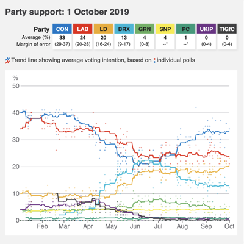

BBC NEWS · ELECTIONS
2019 Poll Tracker
I built the chart and scoreboard for the BBC News Poll Tracker, worked on a version that ran without JavaScript, and automated updates so both versions stayed current.

Building the chart and scoreboard
I built the scoreboard with HTML, CSS and Handlebars templates so readers could see each party’s latest support estimate and its margin of error at a glance. In the D3 chart below it, dots showed individual poll results and lines showed how support for each party was changing over time.
The tracker also included the full dataset off-screen so screen reader users could explore the individual poll results in detail.
I also worked on what we called the 'core content' version. This is what is available when JavaScript is disabled. We believed that everybody should be able to access the information provided, no matter their device. It used HTML, CSS and images to render a near-identical experience.
Developers didn't want to work Sundays
New polls often came out on Sundays, when a developer might not be around to publish an update. I set up an AWS Lambda function to check the polling feed every minute. It used checksums to compare the latest data with the previous version and triggered a Jenkins build only when the data changed.
Jenkins fetched the latest data, applied the Kalman filter to estimate the polling trend we'd written with the journalists and prepared separate datasets for the D3 chart, pictogram and table. Puppeteer captured the chart at several sizes to use as image fallbacks for the core content version and Apple News. The build published everything together so readers saw the same figures across the tracker.
- AWS Lambda Check the polling feed every minute. Start a build when the checksum changes.
- Jenkins build Fetch the latest polls, calculate the trend and prepare the datasets.
- Published updates Chart, pictogram and table Web and Apple News fallbacks captured with Puppeteer
Putting the power in the journalists' hands
The Lambda function and Jenkins build worked well, but the editorial team wanted a way to manually trigger a build if they needed to. And we'd prefer not to be running polling every minute. We all used Slack, so I decided to build an intergration to allow journalists to trigger a build and deploy from the project’s channel.
A journalist could start a build with a slash command in the project’s Slack channel. An AWS Lambda function checked their publishing permissions before triggering Jenkins. The deployer reported progress and errors back in the channel. I wrote a guide to pin there so journalists could look up what an error meant and when to contact a developer.
This also meant we could allow journalists to see how their content looked in context. The devs could configure what branch the deployer would deploy so editorial could try out changes and show progress to stakeholders while developers carried on working on another branch.
One journalist said he loved being able to publish an update from his phone on the school run.
Reusing the workflow across the newsroom
I added reusable Jenkins and Makefile templates to the team’s project set up kit so devs could use the Slack deployer in any project where it would be handy. Developers could set it up for a new project in as little as 15 minutes and add their own custom build steps (such as data manipulation) when they needed to.
During the pandemic, BBC News built tools that let readers check infection and vaccination rates in their area. The figures changed daily, and keeping the lookups current had previously depended on having a developer available to deploy each update. With the Slack deployer, journalists could publish the new figures as soon as they came out, including on evenings and weekends.